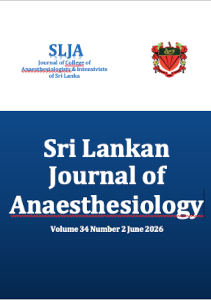

Current Issue
Volume 34 - Issue 2 - 2026About this journal
The Sri Lankan Journal of Anaesthesiology is the official journal of the College of Anaesthesiologists and Intensivists of Sri Lanka. It publishes clinical investigations, research articles, audits, case reports, review articles and CME articles relating to anaesthesiology, critical care and pain. It is published bi annually in January and June.
Sri Lankan Journal of Anaesthesiology is included on DOAJ and Scopus.
Article Processing Charge (APC)
APC waivers - Applicable if the Corresponding author is,
- An ordinary/ honorary/ associate member of the College of Anaesthesiologists and Intensivists of Sri Lanka (COAISL)
- A medical professional practicing in Sri Lanka
APC Fee structure
Applicable for Corresponding Authors from SAARC countries
USD 30: payable upon acceptance for publication
Applicable for Corresponding Authors from Non-SAARC Countries
USD 50: payable upon acceptance for publication
APC Effective Date
APC is applicable for all manuscripts submitted from 01st November 2025